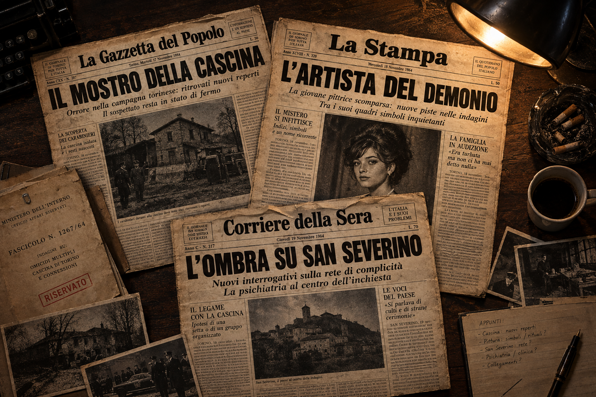
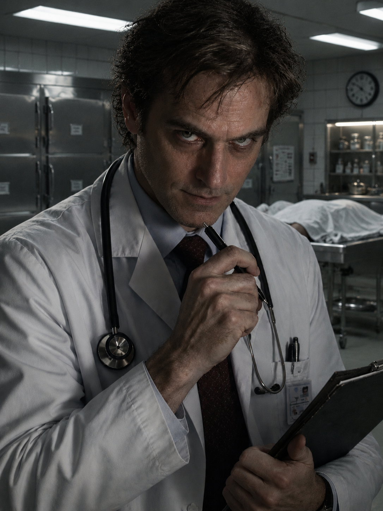
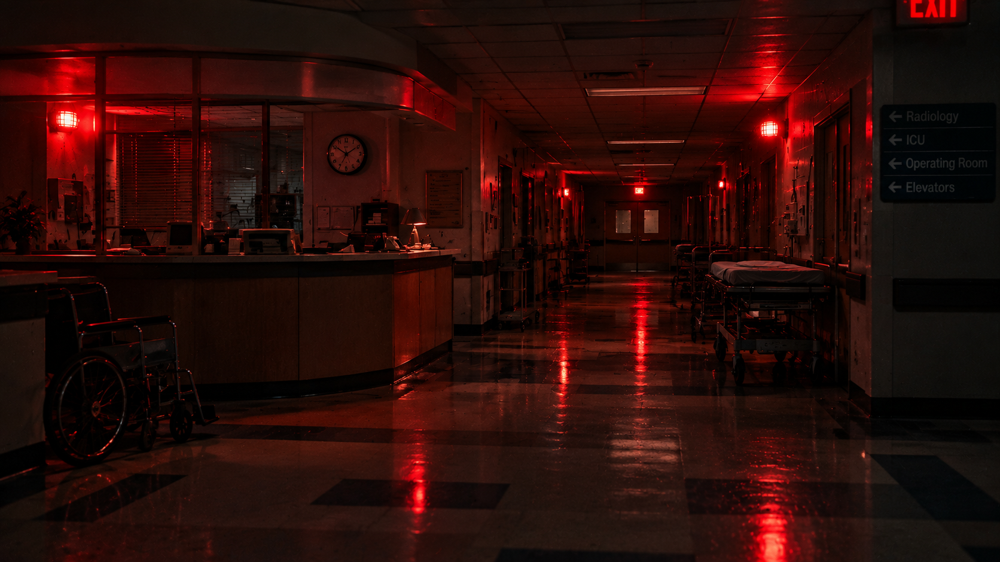
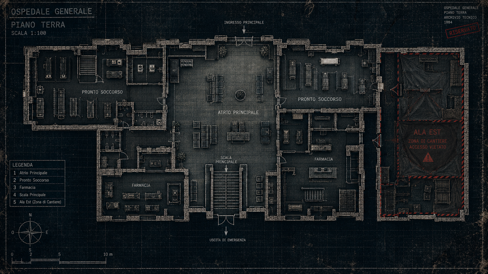
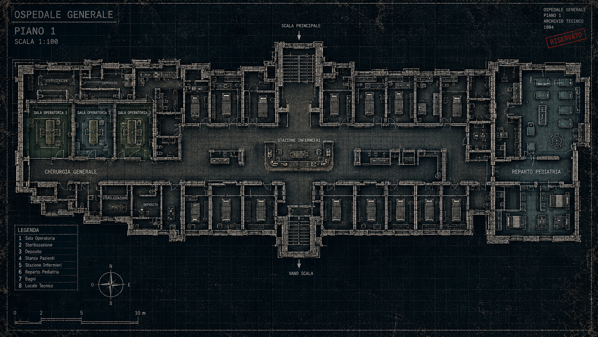
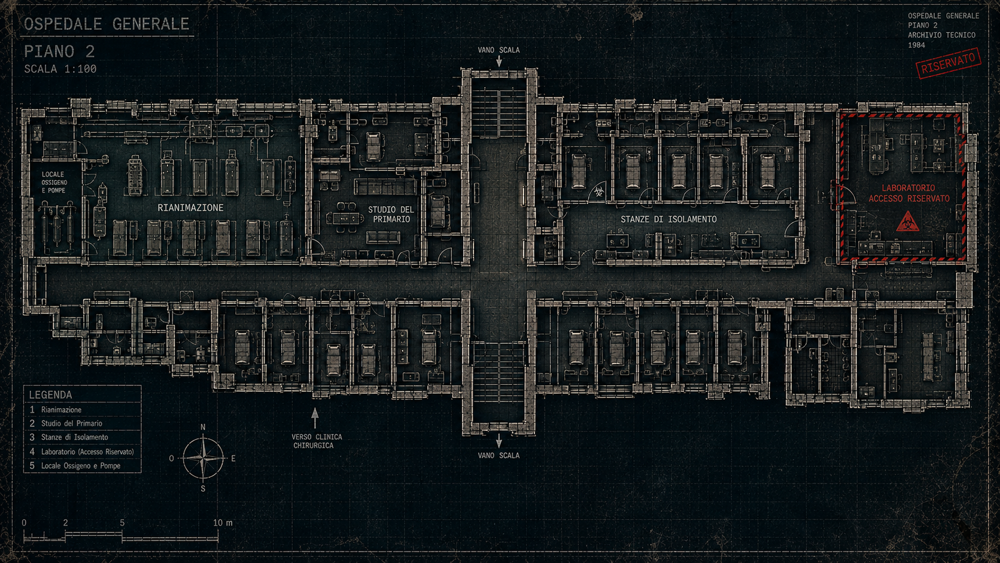
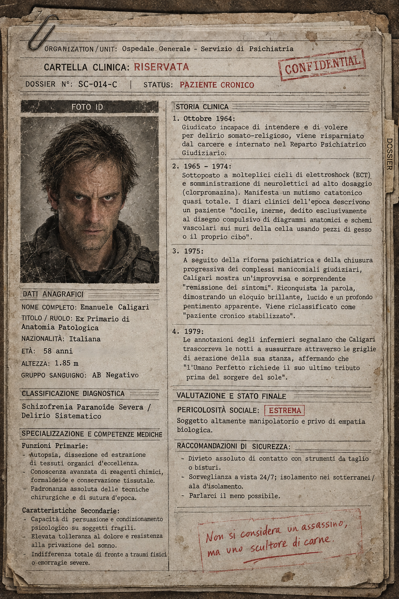
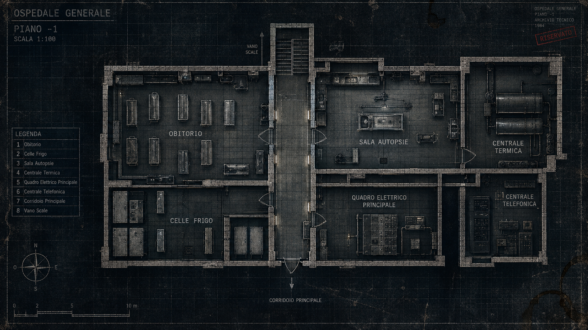
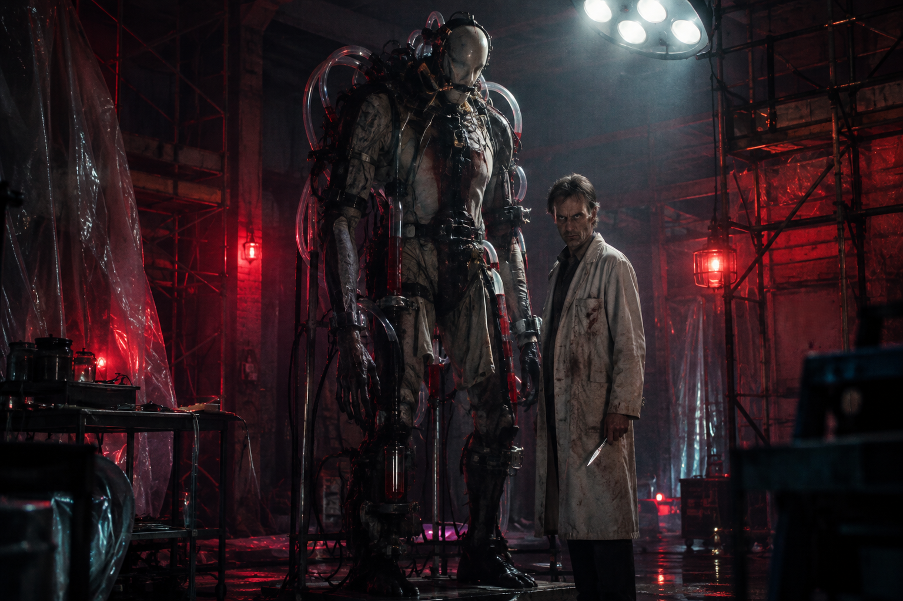
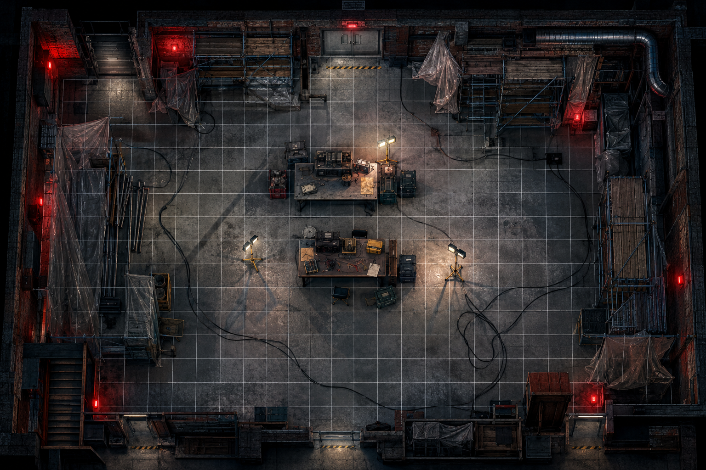

CRONACHE & DADI
[ONE-SHOT HORROR PSICOLOGICO & MISTERO]
🎧 Accendi l'atmosfera...
Il bagliore che taglia il corridoio non porta luce, solo un chiarore malato, rosso come carne viva appena incisa, che profuma di alcol denaturato e ferro. Le poche ombre sopravvissute tra le corsie non sono più persone, ma sagome spettrali avvolte in camici macchiati e coperte d'emergenza; muovono passi incerti e striscianti nel buio, tenendosi le mani sulla bocca per soffocare il proprio respiro ed evitare di tradire la propria presenza. Si muovono a stento lungo le pareti sbarrate, come cavie in una gabbia sigillata, mentre dalla griglia arrugginita degli altoparlanti cola una voce metallica e teatrale, che guida i loro passi verso il cuore pulsante dell'ospedale, dove Lui attende con il bisturi in pugno, spinto dalla brama lucida di chi considera la carne umana solo un meccanismo difettoso da smontare e ricomporre.
Siamo nel 1984, in una cittadina dimenticata, schiacciata sotto un cielo di piombo e circondata da colline spoglie. L'Ospedale "San Severino" non è mai stato un ospedale accogliente, ma un imponente gigante di cemento armato e vetro arrugginito nato alla fine degli anni Sessanta, e mai davvero completato. L'edificio si spacca in tre anime distinte che raccontano epoche e abbandoni differenti, a partire dal corpo centrale con le sue degenze affollate e i sotterranei dell'obitorio, fino ad arrivare all'ala nuova del pronto soccorso e della terapia intensiva, carica di monitor a tubo catodico dal sibilo continuo e da porte d'accesso elettroniche. Separata da teli di plastica trasparente si stende poi l'ala est, un cantiere sospeso nel tempo tra polvere di cartongesso, tubature a vista e l'odore metallico di rame e pittura fresca, la prigione improvvisata dove il Dottor Caligari, un famoso serial killer, adesso è i cura.

Per l'opinione pubblica, il Dottor Caligari, "L'Artista del Demonio", è un fantasma sepolto da vent'anni, un ex anatomopatologo condannato per una serie di omicidi macabri, sezionando le sue vittime ancora vive nel folle tentativo di creare "l'Essere Perfetto". Per la giustizia è un mostro affetto da una forma devastante e lucida di schizofrenia paranoide, custodito fino a poche ore fa in un manicomio giudiziario di massima sicurezza.
Un violento scontro avvenuto tra le mura della sua cella gli ha procurato un trauma cranico grave con ematoma subdurale: un'emorragia cerebrale che ha costretto le autorità a predisporre un ricovero in estrema urgenza per un intervento neurochirurgico non rinviabile, all'Ospedale San Severino. Per evitare il panico in città e la gogna dei giornali, il primario di Chirurgia, il Dottor Moretti, ha predisposto il suo alloggio nell'ala est dell'ospedale, un settore attualmente chiuso al pubblico per lavori di ampliamento.
Durante la notte dopo l'intervento, mentre Caligari giace sul tavolo operatorio dell'Ala Est sotto una sedazione apparente, scatta il piano. Un complice silenzioso recide con una tronchese i pesanti cavi in rame del centralino nei sotterranei, tagliando l'unico cordone ombelicale dell'ospedale con il mondo esterno, e provoca un cortocircuito devastante ai quadri elettrici generali. Il sistema di blocco centralizzato entra in funzione con un sordo colpo pneumatico: le uscite di sicurezza si sigillano, i serramenti delle finestre si bloccano e le grate di ventilazione si chiudono all'unisono. Mentre il ronzio dei condizionatori muore nel silenzio, si accendono solo le luci rosse d'emergenza.
I personaggi si ritrovano per pura coincidenza nello stesso identico punto: l'atrio centrale, attorno al debole bagliore e al ronzio sommesso dei distributori automatici. I loro destini si incrociano in quel momento per motivi differenti: c'è chi è ricoverato per un piccolo intervento di routine ed è stato svegliato dai morsi della fame, chi sta affrontando l'estenuante turno di notte tra le corsie in cerca di un caffè correttivo per restare sveglio, e chi si è concesso una pausa fugace dalla sedia d'attesa, dopo aver vegliato per ore al capezzale di un parente ricoverato. Mentre cercate di capire cosa stia succedendo, ancora sorpresi dal rumore del distributore e dal tonfo della lattina appena caduta, un colpo secco proviene dalla scalinata principale. Un qualcosa di pesante e rotondo rimbalza di gradino in gradino, fermandosi a pochi passi da voi. Prima ancora che possiate distinguere cosa sia, il grido disperato di un'infermiera al piano di sopra vi raggela il sangue.
Non è un semplice assassino sadico, ma un uomo sprofondato nell'abisso di una deviazione mentale lucida, metodica e rigorosamente accademica. La sua figura rappresenta l'incarnazione della scienza piegata alla follia pura. La sua psiche è dominata da una forma grave di schizofrenia paranoide con manie di controllo e onnipotenza: Caligari non percepisce le persone come esseri umani dotati di sentimenti, ma come un assemblaggio biologico imperfetto che solo la sua mente ha il dovere di emendare e perfezionare.

Tutto ebbe inizio vent'anni prima, di fronte al suo primo cadavere aperto durante un'autopsia di routine. In quel silenzio Caligari visse l'esperienza psicotica primaria: credette di sentire le voci dei morti. Quelle voci non erano sussurri spettrali, ma un imperioso e razionale comando che lo implorava di liberarla dall'imperfezione e di costruire l'Essere Umano Perfetto. All'inizio Caligari obbedì agendo nell'ombra dell'obitorio: asportava segretamente gli organi più sani dai cadaveri prima della sepoltura, nascondendo le sue tracce sostituendo le parti prelevate con organi animali reperiti nei macelli o tamponi di formaldeide e ricucendo i torsi con suture impeccabili.
Ben presto, però, le voci cambiarono richiesta, facendosi più esigenti e spietate: gli organi dei morti erano contaminati dal decadimento, serviva carne viva, pulsante, impregnata di pura forza vitale. Caligari non cacciava a caso: attraverso lo studio maniacale delle cartelle cliniche, individuòle sue vittime:
Il Dottor Caligari non è stato tradito da una svista banale o da una confessione, non è stato tradito da una svista banale o da un’imprudenza, ma da una reazione biologica e chimica imprevedibile legata alla sua quinta e ultima vittima: una giovane e promettente pittrice. La ragazza soffriva di una rara patologia autoimmune alle vie biliari e ai vasi sanguigni, che la cartella clinica non riportava. Per conservare i tessuti oculari e gli organi nella cascina isolata prima dell'innesto, il Dottor Caligari utilizzava una complessa miscela chimica a base di formaldeide, glicerina e sali di cromo. Il contatto tra questa soluzione e il sangue alterato dalla patologia della pittrice ha innescato un'anomala reazione gassosa, generando un composto volatile estremamente acre, simile a un fetore pungente di mandorle amare bruciate e zolfo.
L'odore chimico ha cominciato a fuoriuscire dalle prese d'aria della stalla della cascina abbandonata. Un cacciatore di campagna della zona, insospettito dai fumi densi e dal fetore che disturbava i cani da caccia, ha pensato inizialmente a una distilleria abusiva o a un deposito di pesticidi illegali e ha allertato i la polizia locale.
Quando la pattuglia è arrivata per il controllo, ha notato la porta sigillata dall'interno con catene, le finestre oscurate con pannelli di feltro e il ronzio continuo di una pompa. Sfondata la porta, le forze dell'ordine si sono trovate di fronte alla macabra scena:
Al centro della stanza, adagiato su un tavolo da autopsia in acciaio, uno scheletro umano finemente pulito e sbiancato, attorno al quale il Dottor Caligari aveva innestato fasce muscolari e gli organi rubati alle sue vittime precedenti, mantenuti in vita da cannelle e flaconi di reagente.
Per il Master, interpretare Caligari significa muoversi lungo questo filo sottile: un uomo che parla con la calma e l'eleganza di un illustre professore universitario, ma le cui azioni sono guidate dall'illusione di essere il creatore della vita.
La testa del Primario compie l'ultimo sordo rimbalzo sull'ultimo scalino di marmo, arrestandosi al centro dell'atrio con la bocca spalancata in una morsa di terrore silenzioso. Nel medesimo istante, i neon sul soffitto emettono uno schiocco secco e si spengono all'unisono. L'ospedale sprofonda nel buio per un secondo interminabile, prima che i fari d'emergenza a batteria si accendano con un ronzio sommesso, inondando la sala di un rosso vivo, denso e sanguigno.
Dalla griglia metallica degli altoparlanti, diffusi in ogni ambiente, si solleva un fischio d'innesco ad alta frequenza, seguito dal rumore metallico di un microfono impugnato. Poi, una breve risata sommessa, calda e incredibilmente lucida:
“Signore e signori, distinti colleghi... e voi, pazienti. Vi chiedo scusa per il deplorevole disordine nell'atrio, ma il qui presente Dottor Moretti soffriva da tempo di una grave, inguaribile forma di ipertrofia dell'ego. In qualità di medico, ho ritenuto mio dovere professionale alleggerirlo dal suo peso più grande.
Per chi non avesse il privilegio di conoscermi, io sono il Dottor Caligari. Primario di Anatomia Patologica, studioso della materia vivente. Qualcuno tra voi avrà memoria del mio nome; altri avranno letto dei miei studi... che le vostre menti ristrette, imbevute di ignoranza, non sono mai state in grado di comprendere o accettare. Ma guardatevi attorno. Questa notte, l'Ospedale San Severino cessa di essere un volgare mattatoio di carne malata per elevarsi a mio personale laboratorio di precisione. Tra esattamente due ore, i generatori d'emergenza a batteria che vi stanno regalando questo splendido crepuscolo si spegneranno definitivamente. Con essi cesseranno di funzionare le pompe d'ossigeno, i polmoni d'acciaio e i monitor della Terapia Intensiva. Tutta la fragile, imperfetta architettura biologica che vi ostinate a chiamare vita smetterà di battere!
Esiste un modo per salvare i vostri cari, naturalmente. L'ho nascosto io stesso.
Consideratelo un esperimento. Una caccia al tesoro scientifica in cui le prede siete voi e il carnefice... beh, il carnefice è la vostra stessa ignoranza.
Il gioco ha inizio adesso. E per quanto riguarda il primo indovinello... beh, vi basterà esaminare con molta attenzione ciò che si trova nella testa del vostro caro Primario
Affrettatevi, amici miei. Il tempo scorre, il sangue fluisce, e io sono spaventosamente curioso di scoprire chi tra voi merita di essere curato... e chi merita soltanto di essere sezionato.“
Un "click" secco segna la chiusura della trasmissione. Nel silenzio che segue, resta solo il ticchettio sordo dei relè a batteria che bruciano i loro primi minuti di autonomia.

Ospedale "San Severino - Atrio
Uscite principali e centralini
Le porte elettroniche sono bloccate. Qualsiasi tentativo di forzatura si mostra inutile. Il telefono sul bancone emette solo un suono fisso. Il terminale con l'interruzione della corrente, si spegne con un "pop" elettrico, lasciando sullo schermo solo un punto verde concentrato che sfuma lentamente al centro
La Testa del Dottor Moretti
La decapitazione è stata eseguita con netto rigore anatomico: un'incisione chirurgica condotta tra la terza e la quarta vertebra cervicale, eseguita probabilmente con una sega da amputazione a filo fine. Le cavità oculari sono vuote, svuotate e pulite minuziosamente.
Quando i giocatori decidono di vincere la nausea e interacts con la testa, emergono tre indizi:
I personaggi possono muoversi liberamente nell'ospedale ed esplorare diverse opzioni immediate per raccogliere risorse o far progredire la storia.
Troverai le mappe e i png presenti per ciacun piano.
Usa i pazienti e il personale come strumenti per mostrare la minaccia di Caligari senza colpire subito i PG. Un urlo nel buio, un carrello della corsia rovesciato o il ritrovamento di un PNG che i giocatori avevano incrociato dieci minuti prima aumentano la tensione e la percezione del pericolo.
Sentiti libero di far interagire i PNG con i giocatori in base alle loro scelte. Alcuni potrebbero crollare nel panico ed essere d'intralcio, altri potrebbero offrire informazioni utili sull'edificio, e altri ancora potrebbero diventare vittime sacrificali per dimostrare le capacità di Caligari.
Usa la presenza dei degenti non autosufficienti per creare dilemmi morali ed etici nei PG: fuggire per salvare la pelle o tentare di proteggere chi non può muoversi?

Rappresenta il punto d'origine dell'incubo. Il Pronto Soccorso, situato nell'ala adiacente, è l'unico reparto operativo a pieno regime durante le ore notturne.
Nunzio D'Angelo
Clara Benetti
Dott. Sergio Valli
Enrico "Chicco" Mariani
Gianni Nardi
Teresa Rossi (in Nardi)

Ospita le corsie ordinarie, la guarita infermieri e le sale operatorie. E' dominato da lunghi corridoi silenziosi e ombre profonde, interrotti solo dal riverbero delle luci d'emergenza rosse.
Dott.ssa Valeria Conti
Marta Ferri
Roberto Sanna
Ettore Bellini
Giacomo Rinaldi

Rappresenta il settore a più alto rischio operativo: i macchinari salvavita dipendono dalle batterie ausiliarie del gruppo di continuità, che ha un'autonomia limitata di 120 minuti.
SECONDO ENIGMA
Nello Studio del primario, accessibile tramite la chiave posseduta dalla Dott.essa Valeria Conti, (oppure una prova superata di Scassinare/Forzare Serrature usando degli attrezzi) è custodita la cartella clinica de "Paziente 041", il Dottor Caligari.
Seguendo le etichette sbiadite sui cassettoni, tra decine di faldoni ingialliti, il fascicolo 041 si distingue subito: la copertina in cartoncino rigido è priva di nome, segnata solo da un timbro rosso sbarrato con la dicitura "CONFIDENZIALE - ATTI GIUDIZIARI". Sfilando il faldone dallo scaffale, notate che il dorso è incavato. All'interno del cartone rigido, risposa un bisturi con il manico in argento cesellato. L'acciaio della lama è intatto, privo di qualsiasi macchia di ruggine, e sulla presa sono incise le iniziali intarsiate: "E.C.". Piegato all'interno della cartella c'è un foglio di diario autografo firmato dal Dottor Caligari:
“La prima incisione non si dimentica. Con questo argento ho separato la carne dallo spirito per la prima volta. È lo strumento puro, incontaminato dalla banale chirurgia d'accademia. Chi lo impugna non porta con sé un'arma, ma la chiave della mia devozione. Il mio ricovero è l'Ala Est, dove il cantiere del nuovo ospedale si è fatto grembo. Venite a contemplare l'Essere Perfetto prima che muova il suo primo respiro.“
Dott. Marco Tarozzi
Angela Vito
Franco Marini, Adele Fontana, Giorgio Piras

E' un labirinto di tubature a vista, pareti in cemento grezzo e corridoi sbarrati da grate di sicurezza. È la zona più fredda, isolata e buia della struttura.
PRIMO ENIGMA
I giocatori decifrano il biglietto estratto dalla bocca del Dottor Moretti e scendono nei sotterranei per aprire il portello.“La sostanza che mi ha fermato trent'anni fa è ancora qui, muta testimone della mia carne imperfetta. Ma il ferro che ha inciso il primo taglio giace sepolto. Chi cerca il mio strumento divino, cerchi la cartella del Paziente 041 nell'Archivio di Chirurgia“
Giuseppe Greco
Mario Santoro
Superando la porta a doppio battente adiacente alla Farmacia, il corridoio si trasforma in un limbo silenzioso. Il pavimento cede il passo a polvere di cantiere e teli di plastica pendenti dal soffitto. Lungo la parete, accasciati contro le panche e le porte, giacciono i corpi inermi del personale di guardia e degli infermieri dell'Atrio. Respirano a fatica, la pelle pallida, immersi in un sonno innaturale guidato da un dolce e acre odore di solvente chimico che ristagna nell'aria. Oltrepassando lo squarcio nel grande telo nero che delimita l'Ala Est, la luce delle vostre torce rivela un massacro macabro.
Le due guardie giurate, il medico di guardia e l'infermiere assegnati alla sorveglianza dell'ala giacciono su tavoli da cantiere in metallo, disposti in cerchio sotto proiettori alogeni da cantiere I loro corpi presentano incisioni; cavità toraciche ed addominali aperte, prive dei rispettivi organi primari.
Al centro della stanza, dove i cavi elettrici ad alta tensione pendono dal soffitto sguainati, una figura colossale si erge nell'ombra. Un mosaico anatomico grottesco, tenuto insieme da spesse cuciture in filo metallico e tubi di gomma che pompano fluido scuro. Al suo fianco, il Dottor Caligali stringe un bisturi d'argento e vi fissa con occhi sbarrati di pura estasi delirante.
“Siete arrivati in tempo per la benedizione“
sussurra la voce del Dottor Caligari, amplificata dal ronzio dei generatori.
“ Ammirate... l'Essere Perfetto ha aperto gli occhi.“


L'Essere Perfetto
Un amalgama imponente di muscoli, innesti biomeccanici, tubi per la circolazione di fenolo e tessuti biologici prelevati. È privo di empatia, immune al dolore viscerale e totalmente asservito alla volontà del Dottor Caligari.
Dottor Caligari
Mente brillante e deviata, manipolatore ossessivo che opera dall'ombra, protetto dai suoi servitori biomeccanici e dalle sue creazioni.
L'impatto psicologico, lo stato di sanità mentale, lo stress del gruppo e le scelte tattiche determinano la sorte finale dei giocatori.
LA FINE DELL'INCUBO
Il Dottor Caligari e la sua macabra creazione, vengono resi inoffensivi o catturati prima che l'ospedale subisca ulteriori vittime.
Le sirene dei soccorsi e della Polizia di Stato squarciano la notte di San Severino. I fari dei lampeggianti blu filtrano attraverso le finestre imbrattate, illuminando le barelle che portano in salvo i superstiti e il personale narcotizzato. Mentre venite scortati all'esterno, la pioggia di ottobre comincia a lavare il piazzale dell'ospedale. Caligari viene caricato su una vettura d'emergenza diretto a una struttura di massima sicurezza da cui non uscirà mai più. Voi avete fermato l'orrore, ma il ricordo di quel bisturi e della voce che risuonava nella filodiffusione vi accompagnerà ogni volta che un'interruzione di corrente spegnerà la luce sopra le vostre teste.
SOPRAVVIVENZA A CARO PREZZO
L'ala est viene distrutta da un incendio o crollo elettrico (es. cortocircuito della Centrale Termica o esplosione dei reagenti), oppure i personaggi
fuggono abbandonando la struttura al suo destino.
Una scarica elettrica arancione scorre lungo i cavi scoperti dell'Ala Est, appiccando il fuoco ai teli plastici d'isolamento e alle impalcature
in legno. Non c'è più tempo per la logica, per le prove o per la giustizia: resta soltanto l'istinto primordiale di respirare. Trascinando i compagni
feriti attraverso il fumo denso del Pronto Soccorso, vi precipitate verso le vetrate dell'Atrio, infrangendole con le panche d'attesa per guadagnare
la via di fuga.
I cancelli dell'Ospedale San Severino si chiudono alle vostre spalle mentre le fiamme divorano l'intero, stagliandosi contro il cielo notturno come
un faro infernale. Quando i Vigili del Fuoco estinguono il rogo alle prime luci dell'alba, del cantiere non restano che travi annerite e macerie fumanti.
Nessun corpo viene identificato con certezza tra le rovine. Ufficialmente, i giornali e la direzione sanitaria catalogheranno la tragedia come un fatale
incidente tecnico dovuto a una fuga di gas e all'incuria del cantiere.
Ma voi sapete la verità. Tra i resti non è stato ritrovato il cadavere di Caligari, né la carcassa del suo esperimento.
E mentre camminate a capo chino nel fango del piazzale, un dubbio atroce vi gelerà il sangue:
avete davvero distrutto l'Opera... o avete solo bruciato la sua gabbia?.
DIVENTARE PARTE DELL'OPERA
I personaggi vengono uccisi o cadono in uno stato di paura, paralisi o panico. Il Dottor Caligari riesce nel suo intento. Terminerà l'Opera.
La vista vi si annebbia. Il pavimento di cemento freddo è l'ultima sensazione fisica che percepite prima che una nebbia scura vi avvolga la mente.
Quando riaprite gli occhi, il tempo ha perso ogni valore. Sopra di voi risplende la luce accecante di un riflettore da sala operatoria. Le cinghie
di cuoio vi serrano i polsi e le caviglie al metallo del tavolo. Il sapore metallico dell'anestetico inalato vi paralizza la lingua e i muscoli del collo.
Volgendo lo sguardo con immensa fatica, scorgete la sagoma del Dottor Caligari chino su di voi. Sul suo volto non c'è la follia sbarrata di un maniaco,
ma la quiete serena di un maestro che sta per stendere la pennellata finale sul suo capolavoro.
“Non abbiate timore... la vostra carne imperfetta ha fallito come individuo, ma servirete a uno scopo più alto.
Oggi non morite: oggi diventate parte dell'Opera.“
Il ronzio ritmico dei macchinari e il battito accelerato del vostro cuore sono gli ultimi suoni che udite nell'oscurità... prima che il primo taglio abbia inizio.
Le schede sono strutturate in modo generico ma immediato: i valori e i concetti indicati possono essere usati direttamente per una sessione narrativa
oppure convertiti nei punteggi numerici o nei mazzi di carte del sistema da voi scelto.
Queste schede sono pensate come uno spunto rapido per avviare subito la sessione senza tempi d'attesa. I partecipanti sono assolutamente liberi di modificarle,
personalizzarle o creare da zero nuovi personaggi in totale libertà, adattando professioni, motivazioni e abilità al proprio gruppo di gioco.
★ ASPETTO ★
Occhiali da vista cerchiati in metallo, camice con le maniche arrotolate, sigaretta spenta tra le dita.
Rigido, professionale, visibilmente stressato dai turni di notte e dai tagli al personale.
★ ABILITA' ★
Medicina, Chirurgia d'Emergenza, Farmacologia, Conoscenza della Struttura, Diagnostica.
★ EQUIPAGGIAMENTO ★
Borsa medica in pelle, stetoscopio, mazzo di chiavi passe-partout del piano, torcia clinica, fiale di morfina e sedativi.
★ CARATTERISTICHE ★
Mente Scientifica - Ottiene un bonus quando analizza indizi biologici, ma subisce più stress quando affronta fenomeni inspiegabili.
★ MOTIVAZIONE ★
Nelle ultime settimane ha notato strani trasferimenti di materiale chirurgico e medicinali verso l'Ala Est. Sa che l'area dovrebbe essere un semplice cantiere bloccato,
ma di notte ha sentito il rumore di montacarichi e generatori in funzione. Vuole capire chi sta usando la sua struttura.
★ ASPETTO ★
Impermeabile stropicciato, taccuino denso di appunti disordinati, sguardo attento e manipolatorio. Affascinante ma cinico,
disposto a rischiare la pelle pur di ottenere uno "scoop".
★ ABILITA' ★
Investigare, Psicologia/Persuasione, Cercare Indizi, Criminologia, Fotografia.
★ EQUIPAGGIAMENTO ★
Fotocamera reflex d'epoca con flash, registratore a cassette portatile, tesserino della stampa scaduto, blocco note e penna, accendino.
★ CARATTERISTICHE ★
Osservatore Scaltro - Nota dettagli e bugie nelle risposte altrui con facilità. Tende a cacciarsi nei guai per troppa curiosità.
★ SEGRETO / MOTIVAZIONE★
Attraverso una soffiata nell'amministrazione penitenziaria, ha scoperto che il Dottor Caligari non si trova in un manicomio criminale, ma è stato trasferito in gran segreto al San Severino. Si è introdotto di
notte nell'ospedale per tracciare il profilo psicologico del mostro e completare il capitolo finale del suo libro sugli assassini seriali d'Italia.
★ ASPETTO ★
Pelle pallida, occhiaie profonde, felpa scura di due taglie più grande. Nervosa, in crisi d'astinenza, spaventata ma
dotata di un feroce istinto di sopravvivenza affinato sulla strada.
★ ABILITA' ★
Furtività, Scassinare/Destrezza manuale, Agilità/Schivare, Percepire Pericoli, Resistenza al Dolore.
★ EQUIPAGGIAMENTO ★
Braccialetto identificativo dell'ospedale, una graffetta piegata tenuta nascosta nella manica, un pacchetto di sigarette accartocciato, accendino.
★ CARATTERISTICHE ★
Allerta da Strada - Reagisce per prima nelle situazioni di imboscata o pericolo improvviso. Soffre di malus se la crisi d'astinenza si fa troppo acuta.
★ SEGRETO / MOTIVAZIONE★
È ricoverata e piantonata dopo un grave incidente d'auto causato mentre guidava sotto l'effetto di sostanze. Nell'impatto ha travolto
un uomo che ora sta lottando tra la vita e la morte al piano superiore (). Se l'uomo muore, per lei si
apriranno le porte del carcere per omicidio: vuole disperatamente sapere se è ancora vivo, o trovare una via di fuga nella confusione della notte.
★ ASPETTO ★
Baffi grigi spessi, divisa d'ordinanza leggermente sbottonata sul collo, sguardo stanco di chi è a un passo dalla pensione.
Pragmatico, burbero ma con un fondo di senso del dovere.
★ ABILITA' ★
Uso delle Armi da Fuoco, Lotta/Prese, Intimidire, Sopravvivenza Urbana, Percezione.
★ EQUIPAGGIAMENTO ★
Pistola d'ordinanza (Beretta 92) con fondina, manette, torcia di servizio pesante in metallo, ricetrasmittente (che prende solo interferenze), mazzo di chiavi delle manette.
★ CARATTERISTICHE ★
Inamovibile - Difficile da intimidire o spaventare con minacce umane. Reagisce seguendo le procedure.
★ SEGRETO / MOTIVAZIONE★
Ha il compito di piantonare lLoredana. Ha accettato questo turno di notte extra solo per racimolare qualche soldo in più per la pensione.
Non sa nulla degli esperimenti o di Caligari: vuole solo che la notte passi senza disordini.
Hai completato la lettura di questa one-shot. Vuoi ricevere altre avventure pronte all'uso, risorse esclusive per Master e unirti a un tavolo attivo di creatori e giocatori?
 Discord
Discord
 Ko-Fi
Ko-Fi
 YouTube
YouTube